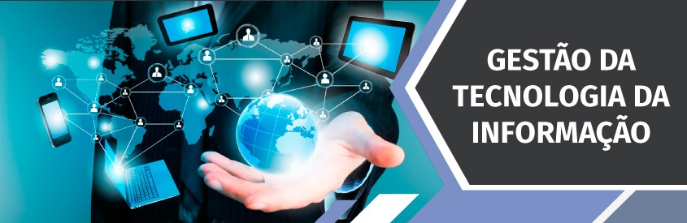

Curso completo de Gestão da Tecnologia da Informação
Torne-se um gestor da infraestrutura logica com nosso Curso Superior Gestão-TI

O Curso Superior de Tecnologia em Gestão da Tecnologia da Informação tem como objetivo formar profissionais para atuarem como gestores da infraestrutura lógica e física e dos serviços relacionados às Tecnologias da Informação e Comunicação (TIC). O curso tem duração de 2 anos e meio (5 semestres) e o conteúdo técnico abordado ao longo do curso irá conferir ao egresso a habilitação em Tecnólogo em Gestão da Tecnologia da Informação. O curso aborda técnicas precisas que servem para executar sistemas informatizados de forma segura para os negócios através do gerenciamento de recursos de tecnologia nas organizações, entre elas software, redes de computadores, bancos de dados e ferramentas para segurança da informação.
O Curso O profissional formado em Gestão da Tecnologia da Informação (TI) poderá atuar com foco no planejamento e gestão dos recursos tecnológicos em empresas de diversos segmentos de negócios em cargos de Gestão de Serviços em TI, Engenharia de Software, Governança em TI e Gerenciamento de Projetos de TI, apto a criar soluções para problemas nas organizações, você estará apto para fazer a administração de infraestrutura física e lógica de ambientes informatizados.
